광학기사 (2015-05-31 기출문제)
1과목: 기하광학 및 광학기기
1. 다음 중 퀠러 조명 방식에 대한 설명으로 옳은 것은?
- 광원을 물체 위에 결상시키고 조명계의 입사동이 결상계의 출사동과 일치하도록 하는 방식이다.
- 광원을 물체 위에 결상시키고 조명계의 출사동이 결상계의 입사동과 일치하도록 하는 방식이다.
- 광원을 결상계의 출사동 상에 결상시키고 물체는 조명계의 입사동 상에 두는 방식이다.
- 광원을 결상계의 입사동 상에 결상시키고 물체는 조명계의 출사동 상에 두는 방식이다.
(정답률: 69%)

2. NA 0.5인 무수차 원형개구 광학계가 파장 193nm의 빛으로 결상할 때, Strehl ratio가 0.8 이상인 defocus 범위는?
- -48.25 ~ +48.25nm
- -96.5 ~ +96.5nm
- -196 ~ +196nm
- -386 ~ +386nm
(정답률: 42%)
3. 두꺼운 렌즈에 대한 설명으로 틀린 것은?
- principal plane은 가상의 plane이다.
- 두 principal point는 서로 conjugate관계이다.
- 렌즈 앞뒤 매질의 굴절률이 같을 때 nodal point와 principal point는 일치한다.
- nodal point에서 굴절이 일어난다.
(정답률: 70%)
4. 어떤 카메라의 셔터속도를 1/250초, 조리개의 F-수를 2로 하였더니 노출량이 적당하였다. 조리개의 F-수를 1.4로 변화시키면서 동일한 노출량을 유지하려면 셔터속도는 몇 초가 되어야 하는가?
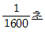
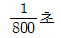
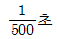
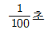
(정답률: 64%)
5. 삼각프리즘을 통과한 광선이 1m 떨어져 있는 곳에 놓여있는 스크린 위에 입사광선의 방향에 대해서 0.01m만큼 변위되었다. 이 프리즘은 몇 디옵터인가?
- 0.01
- 0.1
- 1
- 10
(정답률: 알수없음)
6. EFL 100mm, f-2, FOV 45°인 광학계의 횡배율이 –0.1, 각배율이 0.5이다. 상측에서 초점심도(depth of focus)가 0.01mm일 때, 물체심도(피사체 심도, depth of field)는? (단, 이 광학계는 공기 중에 있다고 가정한다.)
- 0.01mm
- 0.1mm
- 0.5mm
- 1mm
(정답률: 37%)
7. 렌즈를 통과한 광선의 굴절각이 빛의 파장에 따라 다르기 때문에 일어나는 수차는?
- 코마
- 구면수차
- 색수차
- 비점수차
(정답률: 82%)
8. 각각 3디옵터와 4디옵터의 굴절능을 가진 렌즈가 굴절률이 1인 공기 중에서 6cm 떨어져 있을 때 뒤초점거리(back focal length)는?
- 13.06cm
- 15.92cm
- 29.45cm
- 71.43cm
(정답률: 알수없음)
9. 다음 중 ( )안에 들어갈 알맞은 용어는?
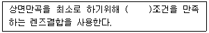
- 코딩톤
- 페쯔발
- 아베 사인
- 몰색화
(정답률: 알수없음)
10. 애플래넷(Aplanat)이란 어떤 수차가 제거된 광학계를 의미하는가?
- 구면수차와 코마
- 색수차와 비점수차
- 왜곡수차와 코마
- 비점수차와 구면수차
(정답률: 73%)
11. 굴절률이 n1=1.5이고, 초점거리가 f1=15cm인 볼록렌즈와 굴절률이 n2이고, 초점거리가 f2=-15cm인 오목렌즈를 간격 d=5cm가 되도록 조합하여 페츠발 조건(Petzval condition)을 만족시키려 한다. 오목렌즈의 굴절률 n2와 이 조합된 렌즈계의 초점거리는?
- n2=1.5, 초점거리=45cm
- n2=1.5, 초점거리=30cm
- n2＜1.5, 초점거리=0cm
- n2＞1.5, 초점거리=0cm
(정답률: 70%)
12. 매질 A에서 매질 B로 그림과 같이 빛이 굴절하고 있다. 다음 중 설명이 잘못된 것은?
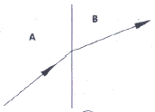
- 매질 B에서 빛의 속도는 A에서 보다 늦다.
- 매질 B에서 빛의 진동수는 A에서 보다 작다.
- 매질 B의 굴절률은 A보다 높다.
- 매질 B에서 빛의 파장은 A에서 보다 짧다.
(정답률: 알수없음)
13. 쌍안경의 표면에 7×50이라 표기되어 있다. 이 쌍안경 대물렌즈의 초점거리가 21cm이라고 할 때 대안렌즈의 초점거리와 출사동의 직경은?
- 대안렌즈 초점거리 = 7cm, 출사동의 직경 = 3.0mm
- 대안렌즈 초점거리 = 3cm, 출사동의 직경 = 50.0mm
- 대안렌즈 초점거리 = 7cm, 출사동의 직경 = 35.0mm
- 대안렌즈 초점거리 = 3cm, 출사동의 직경 = 7.1mm
(정답률: 50%)
14. 다음 중 반사광학계에서 근본적으로 발생하지 않는 수차는?
- 파면수차
- 광선수차
- 단색수차
- 색수차
(정답률: 37%)
15. 정상적인 사람의 눈에 관한 설명으로 옳지 않은 것은?
- 눈의 원점은 무한대이다.
- 정상적인 사람의 굴절력은 약 40 디옵터이다.
- 망막에 맺히는 상은 도립실상이다.
- 정상적인 사람의 명시거리는 약 25cm 이다.
(정답률: 64%)
16. 곡률반경 R1=8.0mm이고 굴절률이 1.5인 양볼록(equi-convex lens) 두꺼운 렌즈에서 중심두께 t가 0.1mm 변할 때 상측 정점 굴절력의 변화는 몇 Diopter인가?
- 0.26D
- 2.60D
- 0.52D
- 5.20D
(정답률: 46%)
17. 굴절률이 1.6인 매질에서 광이 2.0×108m진행할 때 광학적 거리(optical path length)는?
- 3.0×108m
- 3.2×108m
- 3.5×108m
- 3.8×108m
(정답률: 알수없음)
18. 다음 중 원적외선 광학계에서 사용할 수 없는 광학소자는?
- 게르마늄 렌즈
- 용융석영 렌즈
- 제로듀어(Zerodur) 반사경
- 실리케이트(silicate) 반사경
(정답률: 알수없음)
19. 초점거리가 +10cm인 볼록렌즈와 초점거리가 –10cm인 오목렌즈를 동일 광축 위에 나란히 놓았다. 두 렌즈 사이의 간격이 10cm일 때, 전체 광학계의 유효초점거리는?
- +10cm
- -20cm
- +40cm
- -40cm
(정답률: 67%)
20. 상의 방향(방위)에 영향을 주지 않고 광속을 90°편향시키는 프리즘은?
- 레만 – 스프링거 프리즘
- 롬보이드 프리즘
- 펜타 프리즘
- 아미찌 프리즘
(정답률: 60%)
2과목: 파동광학
21. 프레넬 zone plate에서 450번째 환의 반경이 3cm이다. 이 zone plate의 초점거리를 파장 0.5㎛인 평행광에 대해서 계산한 값은?
- 40cm
- 80cm
- 4m
- 20m
(정답률: 알수없음)
22. 다음 그림에서 보록렌즈의 후초점면상에는 입력영상의 Fourier 변화패턴이 형성된다. 여기서 후초점면상에서의
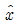
축 좌표 x0에 대응되는 공간 주파수는?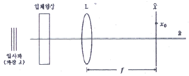
- λ/(x0ㆍf)
- f/(x0ㆍλ)
- x0(fㆍλ)
- (x0ㆍf)/λ
(정답률: 알수없음)
23. 직경 1mm인 원형구멍에 500nm의 레이저광을 비추었다. 이 때 원형구멍으로부터 2m 떨어진 스크린 중앙에 생기는 가장 밝은 에어리(Airy)원판의 반지름은?
- 1.22mm
- 12.2mm
- 2.44mm
- 24.4mm
(정답률: 80%)
24. 파장이 4000Å인 빛으로 그림과 같은 영의 간섭실험을 하였다. P는 스크린의 중심으로부터 두 번째 어두운 무늬를 가리킨다. P점ᄁᆞ지의 두 빛의 경로차는? (단, S1과 S2는 두 개의 동일한 파장의 점광원이고, 0는 S1과 S2를 연결한 선의 이등분선상에 있는 스크린상의 중심점이다.)
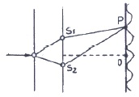
- 2000Å
- 3000Å
- 6000Å
- 9000Å
(정답률: 54%)
25. 그림과 같이 단색광 평면파가 조사되는 광학계의 수렴광파 내에 초점면으로부터 거리d 위치에 2차원적 투과도 분포를 갖는 물체를 두었다. 이 경우에 대한 설명으로 옳은 것은?
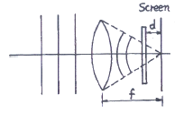
- object를 조사하는 면적은 f/d에 비례한다.
- d＜f일 때 Fourier 변환의 공간적 크기는 작아진다.
- d=f일 때 Fourier 변환의 공간적 크기는 최소가 된다.
- 이 경우에는 물체의 Fourier 변환상이 Screen에 맺히지 않는다.
(정답률: 65%)
26. 공기 중에서 파장이 λ인 단색광이 굴절률이 n인 박막에 수직으로 입사한다. 박막 아래, 위의 매질이 공기라면 반사광이 보강간섭을 일으키는 박막의 최소 두께는 얼마인가?
- λ/4
- λ/(4n)
- λ/2
- λ/(2n)
(정답률: 60%)
27. 다음 중 진폭분리형 간섭계가 아닌 것은?
- 마이켈슨 간섭계
- 패브리-페롯 간섭계
- 영의 이중슬릿 간섭계
- 층밀리기 간섭계(shearing interferometer)
(정답률: 70%)
28. 굴절률 1.5인 유리에 어떤 물질을 1층 증착시켜 물속에서 수직으로 사용할 때 반사율이 최소가 되게 하려고 한다. 굴절률이 어떤 값을 갖는 물질을 증착해야 가장 효과가 크겠는가?
- 1.4
- 1.7
- 1.8
- 2.2
(정답률: 0%)
29. 낮에 전선에 앉아있는 새의 그림자가 지면에 생기지 않는 이유는?
- 간섭
- 산란
- 반사
- 회절
(정답률: 50%)
30. 투과형 홀로그램을 기준파로 비출 때 기준파의 파장이 변화함에 다라 재생 상에 일어나는 변화가 아닌 것은?
- 크기가 변화한다.
- 모양이 달라진다.
- 밝기가 달라진다.
- 재생위치가 달라진다.
(정답률: 46%)
31. 마이켈슨 간섭계의 한쪽 경로에 진공으로 배기시킨 원통을 경로와 나란히 설치하고, 원통속에 어떤 기체를 서서히 주입하면서 변화하는 간섭무늬의 수를 측정하고자 한다. 파장이 500nm인 빛을 사용하여 대기압이 될 때까지 변화한 무늬의 수를 측정한 결과가 1000개일 때, 대기압 하에서 이 기체의 굴절률은?
- 1.015
- 1.012
- 1.010
- 1.0⑤
(정답률: 알수없음)
32. 그물망 물체의 스펙트럼에 수직으로 좁은 슬릿을 놓아서 수직방향으로 고차 회절 무늬만을 통과시켰을 때 상표면 A에 보이는 결과로 옳은 것은?
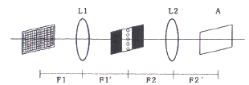
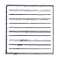
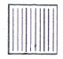
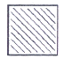
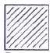
(정답률: 15%)
33. 함수 f(t)= A sin(wt+ε)의 autocorrelation 결과로 옳은 것은?
- Cff=(A2/2)ㆍcos(wτ)
- Cff=(A2/2)ㆍcos(wτ+ε)
- Cff=(A2/2)ㆍsin(wτ)
- Cff=(A2/2)ㆍsin(wτ+e)
(정답률: 알수없음)
34. 패브리-페로간섭계(Fabry-Perot interferometer)의 자유 스펙트럽 영역(free spectral range, (△v)FSR)이 20GHz, 반사예리도(reflecting finesse, Г)가 400일 때, 이 간섭계의 분해능폭(△v)은 얼마인가?
- 20MHz
- 50MHz
- 200MHz
- 500MHz
(정답률: 알수없음)
35. 눈을 가늘게 뜨면 흐렸던 물체의 형태가 개략적으로 분명하게 보인다. 이와 관련된 물리적 설명과 가장 거리가 먼 것은?
- 수차가 줄어들기 때문이다.
- 광량이 줄어들기 때문이다.
- 눈의 초점심도가 길어지기 때문이다.
- 높은 공간진동수 성분의 광이 사라지기 때문이다.
(정답률: 알수없음)
36. 회절격자로부터의 m차 회절광에 대한 각분산(Dm:angular dispersion)의 표현으로 옳은 것은? (단, θm은 m차 회절광의 격자의 수직면에 대한 회절각, a는 회절격자의 격자간 간격이다.)
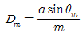
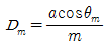
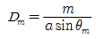
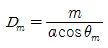
(정답률: 알수없음)
37. 보이저 탐색선이 보내온 전송사진에 기기의 조정 미비로 인하여 일정한 간격으로 수평줄이 나타났다고 할 때 전체적인 화면의 영상은 크게 상하지 않고, 렌즈의 푸리에 변환(Fourier Transform) 특성을 이용하여 이 선들을 제거할 수 있는 방법으로 옳은 것은?
- 푸리에 변환 면의 중심부 밝기를 증대시킨다.
- 푸리에 변환하면서 렌즈의 중심부를 검게 한다.
- 푸리에 변환 면에서 중심부분의 빛을 차단한다.
- 푸리에 변환 면의 중앙에서 좌우로 일정한 거리에 떨어진 공간주파수 성분을 차단한다.
(정답률: 알수없음)
38. 영(Young)의 이중 슬릿 실험을 빨강, 노랑, 파랑의 단색광으로 수행하였다. 스크린에서 간섭무늬의 간격이 가장 작은 경우는?
- 빨강
- 노랑
- 파랑
- 모두 같다.
(정답률: 알수없음)
39. 다음 중 회절이론과 관계가 없는 것은?
- 호이겐스(Huygens) 원리
- 셀마이어(Sellmeier) 방정식
- 레일리-조머펠트(Rayleigh-Sommerfeld)스칼라식
- 프레델-키르히호프(Fresnel-Kirchhoff) 스칼라이론
(정답률: 알수없음)
40. 나트륨등에서 나오는 노란빛은 5890Å과 5896Å의 두 파장으로 되어 있다. 이 빛의 스펙트럼을 회절격자를 사용하여 분해하려고 한다면, 다음 중 어떤 빛을 사용하여야 하는가? (단, 나트륨등의 기체압력과 온도에 의한 선폭 확대는 무시한다.)
- 격자선 밀도 10lines/mm인 5cm×5cm회절격자에서 1차 회절된 빛을 사용한다.
- 격자선 밀도 15lines/mm인 5cm×5cm회절격자에서 1차 회절된 빛을 사용한다.
- 격자선 밀도 5lines/mm인 5cm×5cm회절격자에서 2차 회절된 빛을 사용한다.
- 격자선 밀도 20lines/mm인 5cm×5cm회절격자에서 2차 회절된 빛을 사용한다.
(정답률: 알수없음)
3과목: 광학계측과 광학평가
41. 마하젠더 간섭기에 내부 굴절률이 일정하지 않으나 완벽히 평평한 두께 1mm의 유리판을 넣었다. 그 간섭무늬가 굴절률이 일정하지 않은 부분에서 원래 간섭무늬간격의 약 2배 정도로 일그러졌을 때, 굴절률의 불균일 정도는? (단, 사용된 빛의 파장은 500nm이다.)
- △n=0.1
- △n=0.001
- △n=0.01
- △n=0.0001
(정답률: 75%)
42. 다음 산화물 중에서 렌즈의 아베수와 굴절률을 크게 하고 무게를 가볍게 하는 주요성분은?
- PbO
- BaO
- TiO2
- B2O3
(정답률: 64%)
43. 다음 중 천체 망원경으로 렌즈보다 거울을 이용한 반사 망원경을 많이 사용하는 이유로 가장 옳은 것은?
- 측정 파장 영역이 좁다.
- 모든 수차를 무시할 수 있다.
- 구경이 큰 거울을 제작할 수 있다.
- 같은 크기의 렌즈보다 분해능이 좋다.
(정답률: 50%)
44. 다음과 같이 프리즘을 통과한 글자의 통과 후의 모습은? (단, 굵은 화살표 방향에서 보았을 때)
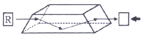
(정답률: 알수없음)
45. Abbe 수(또는 역분산능)에 대한 식으로 옳은 것은?
- (nD-1)/(nF-nC)
- (nD+1)/(nF+nC)
- (nF+nC)/(nD-1)
- (nF-nC)/(nD+1)
(정답률: 80%)
46. 프리즘들 중에서 입사한 상의 상하좌우가 뒤집어지면서 입사한 방향과 평행하게 입사방향의 반대방향으로 상이 나가는 프리즘은?
- 도브 프리즘(dove prism)
- 포로 프리즘(porro prism)
- 펜타 프리즘(penta prism)
- 직각 프리즘(rectangular prism)
(정답률: 55%)
47. 케플러식 망원경의 설명으로 틀린 것은?
- 상이 뒤집혀 보인다.
- 출사동은 경통 내부에 있다.
- 안점이 접안렌즈의 후방(상쪽)에 위치한다.
- 양의 굴절능을 가진 접안렌즈가 사용된다.
(정답률: 알수없음)
48. 다음 중 사람 눈의 가시광선 영역으로 가장 옳은 것은?
- 100~400nm
- 700~1000nm
- 400~700nm
- 1000~10000nm
(정답률: 73%)
49. 광학유리의 굴절률은 가시광선 영역에서 파장이 길어질수록 어떻게 변화하는가?
- 감소한다.
- 일정하다.
- 증가한다.
- 불규칙적이다.
(정답률: 67%)
50. 일반적인 크라운(Crown) 유리의 조성에 들어가는 성분이 아닌 것은?
- PbO
- CaO
- SiO2
- Na2O
(정답률: 50%)
51. 슬라이드 영사기에서 40cm의 초점거리를 가진 렌즈로 4cm 크기의 슬라이드를 렌즈에서 20m 멀어진 스크린 위에 투영하고 있다. 이 때 투영된 상의 크기는 약 얼마인가?
- 196cm
- 200cm
- 208cm
- 216cm
(정답률: 64%)
52. 광학유리의 조건 중 하나인 무색성(Free From Color)의 의미를 정확히 설명한 것은?
- 사용파장 대역의 빛을 선택적으로 투과시키는 것을 의미한다.
- 사용파장 대역에서 유리 내부의 밀도가 균일해야 한다는 것을 의미한다.
- 사용파장 대역의 빛을 손실없이 그대로 통과시켜야 한다는 것을 의미한다.
- 사용파장 대역에서 광학유리 표면에서 빛의 반사가 일어나지 않아야 한다는 것을 의미한다.
(정답률: 알수없음)
53. 다음 광학 기기 중 반사광의 방향이 입사광의 반대방향으로 평행하게 되돌아오고, 여러 측량과 일부 간섭계에서 널리 사용되며, 달까지의 거리를 정밀하게 측정하기 위해 달에도 설치된 광학 기기는?
- 직각 프리즘(rectangular prism)
- 도브 프리즘(dove prism)
- 펜타 프리즘(penta prism)
- 입방체 모서리 반사경(comer cube)
(정답률: 알수없음)
54. 지름 15cm, 초점거리 20cm인 대물렌즈와 초점거리 2cm인 대안렌즈로 천체 망원경을 제작할 경우, 두 렌즈 사이의 거리와 대안렌즈의 최소 지름을 각각 구하면?
- 18cm, 1.0cm
- 22cm, 1.0cm
- 18cm, 1.5cm
- 22cm, 1.5cm
(정답률: 알수없음)
55. 7×50 이라는 숫자가 쓰여 있는 쌍안경의 대물렌즈의 초점 거리는 140mm, 대안렌즈의 직경은 14mm일 때 대안렌즈의 초점거리는?
- 10mm
- 20mm
- 30mm
- 40mm
(정답률: 42%)
56. 레이저의 종류와 활성물질과의 관계가 틀린 것은?
- 액체레이저 – 색소 레이저
- 기체레이저 – He-Ne 레이저
- 고체레이저 – Nd:YAG 레이저
- 반도체레이저 – Ti:Sapphire 레이저
(정답률: 70%)
57. 파장분해능이 가장 높은 분광소자는?
- 색 필터(Color filter)
- 회절격자(Diffraction grating)
- 분산 프리즘(Dispersing prism)
- 패브리 페로 에탈론(Fabry-perot etalon)
(정답률: 46%)
58. 다음 중 광통신에 주로 쓰이는 레이저는?
- 이산화탄소 레이저
- GaN 계 반도체 레이저
- 엑시머(Excimer) 레이저
- InGaAsP 계 반도체 레이저
(정답률: 알수없음)
59. 파장 500nm의 빛이 회절격자에 수직하게 입사하고 이웃하는 두 극대가 sinθ=0.1과 sinθ=0.2를 만족시키는 각도에서 일어났다면 이웃한 슬릿 간의 간격은?
- 5.0×10-6m
- 10.0×10-6m
- 15.0×10-6m
- 20×10-6m
(정답률: 82%)
60. 광학유리에 대한 설명으로 틀린 것은?
- Abbe 수가 50보다 작으면 플린트(flint)유리라 한다.
- Abbe 수는 유리의 분산도가 낮으면 낮을수록 낮은 수로 나타낸다.
- 플린트(flint) 유리와 크라운(crown) 유리는 Abbe 수로 결정된다.
- 유리번호 611558에서 611은 굴절률 1.611을, 558은 Abbe 수 55.8을 나타낸다.
(정답률: 알수없음)
4과목: 레이저 및 광전자
61. 결정에 전압을 걸어 주었을 때 가해준 전장의 세기에 비례하여 굴절률이 변화하는 효과를 무엇이라고 하는가?
- Kerr 효과
- Pockels 효과
- Cotton-Mouton 효과
- Faraday 효과
(정답률: 64%)
62. 레이저 가공기에 많이 사용되는 CO2레이저의 출사 파장은?
- 0.3㎛
- 0.63㎛
- 1.06㎛
- 10.6㎛
(정답률: 55%)
63. 정상(Ordinary) 굴절률과 이상(Extraordinary)굴절률의 차이를 이용하여 한쪽방향의 편광 빛만 투과시켜 얻을 수 있는 프리즘은?
- Wollaston 프리즘
- Rochon 프리즘
- Senarmont 프리즘
- Nicol 프리즘
(정답률: 64%)
64. 엑시머 레이저의 종류와 발진 파장이 잘못 연결된 것은?
- Ar2-126nm
- ArF-193nm
- Xe2-222nm
- KrF-248nm
(정답률: 알수없음)
65. 다음 중 레이저를 발진시키기 위한 여기 방법으로 가장 거리가 먼 것은?
- 방전 플라즈마 여기
- 전류 여기
- 압력 여기
- 광 여기
(정답률: 알수없음)
66. GaAs반도체 재료는 실온에서 1.4eV의 에너지 밴드의 갭을 갖고 있다. GaAs를 사용한 반도체레이저의 발진파장은?
- 8⑤nm
- 886nm
- 924nm
- 975nm
(정답률: 알수없음)
67. 다음 중 쌍축결정(biaxial crystal)의 굴절률의 크기 관계를 바르게 표현한 것은?
- nx ＜ ny ＜ nz
- ny ＜ nx ＜ nz
- nz ＜ nx ＜ ny
- nz ＜ ny ＜ nx
(정답률: 14%)
68. 다음 결정구조 중 전기광학 특성인 포켈스효과(Pockels effect)를 보이는 구조로 옳은 것은?
- 단축 결정구조를 제외한 전 결정구조
- 쌍축 결정구조를 제외한 전 결정구조
- 중심대칭이 없는 등방성 결정구조를 제외한 전 결정구조
- 중심대칭이 없는 등방성(isotropic), 단축(uniaxial) 및 쌍축(biaxial) 결정 전부
(정답률: 73%)
69. 편광이 되지 않는 빛이 임계각 30°인 물질의 표면에서 반사할 때, 반사광이 완전히 선형-편광되는 입사각 θ의 tan 값은?
- 0.5
- 2
- 3
- 5
(정답률: 54%)
70. 다음 중 빨간색을 출력하는 반동체 레이저는?
- InGaN
- InGaAsP
- ZnSSe
- AlGaInP
(정답률: 77%)
71. 출력이 1mW의 He-Ne laser 광속을 F-number 1인 렌즈를 사용하여 접광하였다. 이 레이저의 파장이 630nm일 때 빔의 초점에서 단위 면적당의 출력은?
- 1 × 107 W/m2
- 2 × 109 W/m2
- 2 × 105 W/m2
- 1 × 103 W/m2
(정답률: 39%)
72. 레이저 공진기 길이를 1m라 할 때, 다음 조건 중 불안정 공진기를 구성하는 것은? (단, R1, R2는 양쪽 반사경의 곡률 반경이다.)
- R1=0.1m, R2=0.1m
- R1=5m, R2=5m
- R1=10m, R2=5m
- R1=10m, R2=10m
(정답률: 80%)
73. 다음 중 레이저 천공의 장점이 아닌 것은?
- 높은 열처리량
- 비 접촉 가공
- 열영향 부위가 작음
- 큰 깊이
(정답률: 42%)
74. 다음 중 주파수가 안정하고 가간섭거리(coherence Iength)가 길어 간섭계 등 정밀 계측에 많이 사용되는 레이저는?
- He-Ne 레이저
- N2 레이저
- CO2 레이저
- ArF 레이저
(정답률: 알수없음)
75. 파장이 λ인 선형 편광된 레이저 빛을 원형 편광된 레이저 빛으로 변환시키려고 할 때 사용하여야 할 광학소자는?
- λ/4판
- λ/2판
- λ판
- 2λ판
(정답률: 55%)
76. 레이저 공진기(resonator)의 두거울의 반사율이 각각 99%이고 길이가 0.5m일 때 단일 모드로 공진시 선폭은?
- 95kHz
- 190kHz
- 380kHz
- 950kHz
(정답률: 알수없음)
77. 다음 중 레이저 빔의 파장을 가변시킬 수 있는 방법으로 가장 옳은 것은?
- 레이저 공진기 내에 회절격자를 삽입한다.
- 레이저 공진기 내에 포화흡수체를 삽입한다.
- 레이저 공진기의 창을 부르스터 각도로 기울인다.
- 레이저 공진기의 반사경을 반사율이 아주 높은 것을 사용한다.
(정답률: 30%)
78. 다음 중 단축-결절체(uniaxial crystal) 만으로 나열된 것은?
- KDP, CaCO3
- GaAs, KCl
- ADP, Nacl
- CaF2, KNbO3
(정답률: 46%)
79. 펄스폭이 아주 좁은(짧은) 레이저를 발생시키기 위해 Mode-locking 방식을 이용할 때 이 방식은 공진기 내의 빛에 있어서 일반적으로 어떠한 결맞음(Coherence)에 영향을 미치는가?
- 종모드간의 위상 결맞음
- 횡모드간의 위상 결맞음
- 종모드간의 주파수 결맞음
- 횡모드간의 주파수 결맞음
(정답률: 70%)
80. 다음 중 가우스 함수의 형태는?
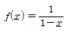
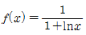
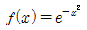
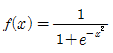
(정답률: 59%)